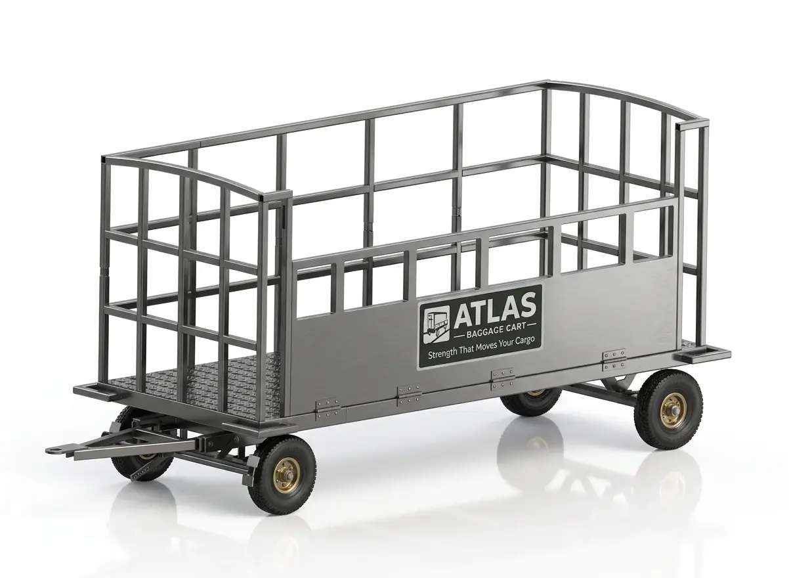
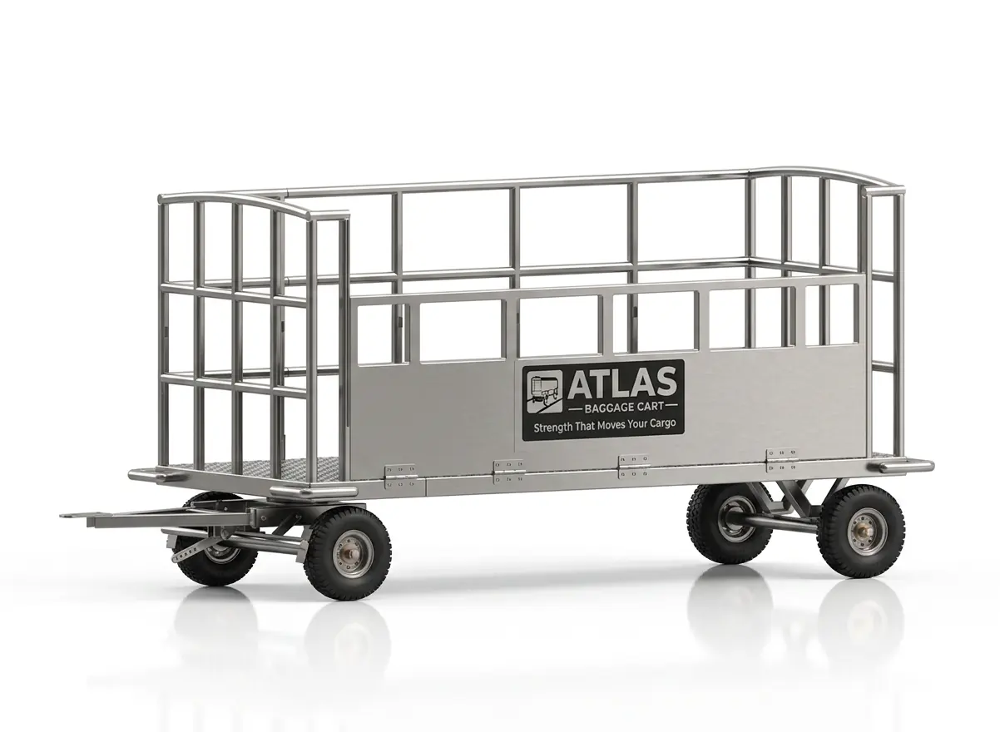

510KG CAPACITY
01 / 02
01 / BAGGAGE HANDLING
ATLAS Baggage Cart
Designed for efficient, safe and reliable baggage transportation in airports, ground handling operations, hotels, logistics hubs and industrial environments. A robust mild-steel structure and heavy-duty components deliver excellent load stability, smooth maneuverability and long service life.
Overall length with tow bar3500 mm
Loading platform length3000 mm
Loading platform width1400 mm
Ground clearance600 mm
Overall heightNot exceeding 1600 mm
Load capacityUp to 510 kg
FrameHeavy-duty mild steel, chequered sheet flooring
WheelsIndustrial wheels with heavy-duty axles and taper roller bearings
SteeringRing-type turntable assembly
BrakingAutomatic on disconnection
Tow speedUp to 30 km/h